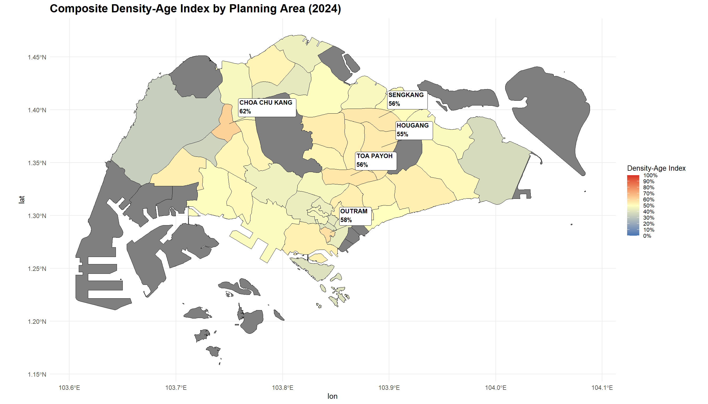
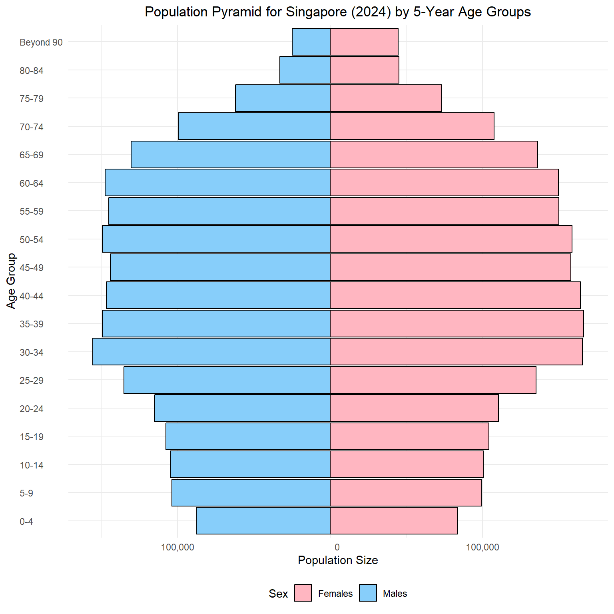
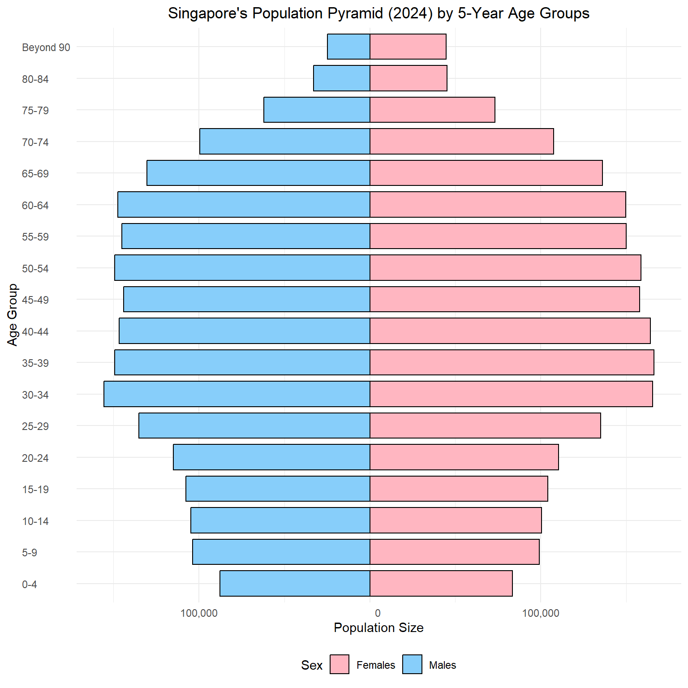

pacman::p_load(tidyverse, ggthemes, gghighlight, ggrepel, patchwork, sf, tmap, knitr, scales)Take Home Exercise 1
Singapore in 2024: A Visual Guide to our Population Landscape.
1.0 Introduction
Singapore’s population structure reveals a dynamic interplay between urban development, ageing, and youth distribution. Let’s explore the demographic breakdown of 2024 through interactive charts.
2.0 Loading R Packages and Dataset
2.1 Libraries Required
The following R packages were used via pacman::p_load() to support data wrangling, visualization, and mapping for Singapore’s 2024 population data.
| Package | Description | Official Link |
|---|---|---|
tidyverse |
A collection of R packages (including ggplot2, dplyr, readr, etc.) for data manipulation, exploration, and visualization. It forms the foundation of modern R workflows. |
tidyverse.org |
ggthemes |
Provides additional themes, color palettes, and formatting options for ggplot2 charts, such as Economist, Wall Street Journal, and Tufte styles. |
CRAN – ggthemes |
gghighlight |
Simplifies highlighting specific data in ggplot2 visualizations without manual filtering. Great for emphasizing trends. |
GitHub – gghighlight |
patchwork |
Enables easy composition of multiple ggplot2 plots into complex layouts. Very useful for dashboards or comparative plots. |
patchwork.data-imaginist.com |
sf |
Provides tools for handling and analyzing geospatial vector data using a data.frame-like structure. Compatible with the tidyverse. |
R-Spatial – sf |
tmap |
A flexible mapping package for creating static and interactive thematic maps from spatial data, built to work well with sf. |
r-tmap.github.io |
2.1 Loading the dataset
The dataset used is “Singapore Residents by Planning Area / Subzone, Single Year of Age and Sex, June 2024”, it is shared by the Department of Statistics, Singapore (DOS).
We begin by loading the required libraries and reading the dataset using readr::read_csv() from the tidyverse collection:
df <- read_csv("data/respopagesex2024.csv")This dataset provides a snapshot of the resident population in Singapore as of June 2024, broken down by planning areas, subzones, age, and sex.
2.1.1 Column Descriptions
| Column | Description |
|---|---|
PA |
Planning Area – As defined by URA Master Plan 2019 |
SZ |
Subzone – Subdivision within a planning area |
Age |
Single Year of Age – From 0 to 100+ |
Sex |
Sex – “Males” or “Females” |
Pop |
Resident Count – Rounded to the nearest 10 |
Time |
Reference Period |
2.1.2 Notes from Source
- Residents who have been away from Singapore for more than 12 continuous months are excluded.
- All population counts are rounded to the nearest 10, which may result in totals that do not sum exactly.
- The reference period for this dataset is June 2024.
2.1.3 Understanding the data
Before we proceed with visualisation, a few inspection and validation of the dataset will be performed.
# A tibble: 6 × 6
PA SZ Age Sex Pop Time
<chr> <chr> <chr> <chr> <dbl> <dbl>
1 Ang Mo Kio Ang Mo Kio Town Centre 0 Males 10 2024
2 Ang Mo Kio Ang Mo Kio Town Centre 0 Females 10 2024
3 Ang Mo Kio Ang Mo Kio Town Centre 1 Males 10 2024
4 Ang Mo Kio Ang Mo Kio Town Centre 1 Females 10 2024
5 Ang Mo Kio Ang Mo Kio Town Centre 2 Males 10 2024
6 Ang Mo Kio Ang Mo Kio Town Centre 2 Females 10 2024Rows: 60,424
Columns: 6
$ PA <chr> "Ang Mo Kio", "Ang Mo Kio", "Ang Mo Kio", "Ang Mo Kio", "Ang Mo K…
$ SZ <chr> "Ang Mo Kio Town Centre", "Ang Mo Kio Town Centre", "Ang Mo Kio T…
$ Age <chr> "0", "0", "1", "1", "2", "2", "3", "3", "4", "4", "5", "5", "6", …
$ Sex <chr> "Males", "Females", "Males", "Females", "Males", "Females", "Male…
$ Pop <dbl> 10, 10, 10, 10, 10, 10, 10, 10, 30, 10, 20, 10, 20, 30, 30, 10, 3…
$ Time <dbl> 2024, 2024, 2024, 2024, 2024, 2024, 2024, 2024, 2024, 2024, 2024,…There are 60,424 rows noted with the 6 columns as stated in the source notes stated in earlier section 2.1.
However the column Age has been loaded as a character type instead of double (numeric) variable as it includes a categorical label for the age group 90+ as “90_and_Over”. This could be handled by converting this label into “90”together with an additional categorical label for this project.
df <- read_csv("data/respopagesex2024.csv",
col_types = cols(
Age = col_character(),
)
) %>%
rename(
Planning_Area = PA,
Subzone = SZ,
Population = Pop
) %>%
mutate(
Age_Num = if_else(Age == "90_and_Over", 90L, as.integer(Age)),
AgeGroup = case_when(
Age_Num <= 14 ~ "Children (0–14)",
Age_Num <= 24 ~ "Youth (15–24)",
Age_Num <= 64 ~ "Adults (25–64)",
TRUE ~ "Elderly (65+)"
),
AgeGroup = factor(
AgeGroup,
levels = c("Children (0–14)", "Youth (15–24)", "Adults (25–64)", "Elderly (65+)")
)
)# A tibble: 6 × 8
Planning_Area Subzone Age Sex Population Time Age_Num AgeGroup
<chr> <chr> <chr> <chr> <dbl> <dbl> <int> <fct>
1 Ang Mo Kio Ang Mo Kio Town C… 0 Males 10 2024 0 Childre…
2 Ang Mo Kio Ang Mo Kio Town C… 0 Fema… 10 2024 0 Childre…
3 Ang Mo Kio Ang Mo Kio Town C… 1 Males 10 2024 1 Childre…
4 Ang Mo Kio Ang Mo Kio Town C… 1 Fema… 10 2024 1 Childre…
5 Ang Mo Kio Ang Mo Kio Town C… 2 Males 10 2024 2 Childre…
6 Ang Mo Kio Ang Mo Kio Town C… 2 Fema… 10 2024 2 Childre…Rows: 60,424
Columns: 8
$ Planning_Area <chr> "Ang Mo Kio", "Ang Mo Kio", "Ang Mo Kio", "Ang Mo Kio", …
$ Subzone <chr> "Ang Mo Kio Town Centre", "Ang Mo Kio Town Centre", "Ang…
$ Age <chr> "0", "0", "1", "1", "2", "2", "3", "3", "4", "4", "5", "…
$ Sex <chr> "Males", "Females", "Males", "Females", "Males", "Female…
$ Population <dbl> 10, 10, 10, 10, 10, 10, 10, 10, 30, 10, 20, 10, 20, 30, …
$ Time <dbl> 2024, 2024, 2024, 2024, 2024, 2024, 2024, 2024, 2024, 20…
$ Age_Num <int> 0, 0, 1, 1, 2, 2, 3, 3, 4, 4, 5, 5, 6, 6, 7, 7, 8, 8, 9,…
$ AgeGroup <fct> Children (0–14), Children (0–14), Children (0–14), Child…Now that the age variable has been cleaned up, we will proceed with the visualisations to describe the Singapore Population Landscape.
3.0 Visualising the Singapore Population Landscape
This article would focus on the top n% of Singapore
population_summary <- df %>%
group_by(Planning_Area) %>%
summarise(
Population = sum(Population),
.groups = "drop"
) %>%
mutate(
Percent = round(Population / sum(Population) * 100, 2)
) %>%
arrange(desc(Population)) %>%
mutate(
CumulativePercent = round(cumsum(Percent), 2),
`S/N` = row_number()
) %>%
select(`S/N`, Planning_Area, Population, Percent, CumulativePercent)
kable(population_summary,
caption = "Population and Cumulative Percentage by Planning Area")| S/N | Planning_Area | Population | Percent | CumulativePercent |
|---|---|---|---|---|
| 1 | Tampines | 284950 | 6.79 | 6.79 |
| 2 | Bedok | 277660 | 6.62 | 13.41 |
| 3 | Sengkang | 265550 | 6.33 | 19.74 |
| 4 | Jurong West | 257910 | 6.15 | 25.89 |
| 5 | Woodlands | 255510 | 6.09 | 31.98 |
| 6 | Yishun | 230320 | 5.49 | 37.47 |
| 7 | Hougang | 228780 | 5.46 | 42.93 |
| 8 | Punggol | 199880 | 4.77 | 47.70 |
| 9 | Choa Chu Kang | 190640 | 4.55 | 52.25 |
| 10 | Bukit Batok | 168390 | 4.02 | 56.27 |
| 11 | Ang Mo Kio | 160450 | 3.83 | 60.10 |
| 12 | Bukit Merah | 149390 | 3.56 | 63.66 |
| 13 | Pasir Ris | 145480 | 3.47 | 67.13 |
| 14 | Toa Payoh | 140030 | 3.34 | 70.47 |
| 15 | Bukit Panjang | 138730 | 3.31 | 73.78 |
| 16 | Serangoon | 118250 | 2.82 | 76.60 |
| 17 | Geylang | 116820 | 2.79 | 79.39 |
| 18 | Sembawang | 110670 | 2.64 | 82.03 |
| 19 | Clementi | 102960 | 2.46 | 84.49 |
| 20 | Queenstown | 102040 | 2.43 | 86.92 |
| 21 | Kallang | 101190 | 2.41 | 89.33 |
| 22 | Bishan | 88210 | 2.10 | 91.43 |
| 23 | Bukit Timah | 84250 | 2.01 | 93.44 |
| 24 | Jurong East | 74590 | 1.78 | 95.22 |
| 25 | Novena | 52150 | 1.24 | 96.46 |
| 26 | Marine Parade | 46950 | 1.12 | 97.58 |
| 27 | Tanglin | 24540 | 0.59 | 98.17 |
| 28 | Outram | 16740 | 0.40 | 98.57 |
| 29 | Rochor | 13040 | 0.31 | 98.88 |
| 30 | River Valley | 11970 | 0.29 | 99.17 |
| 31 | Newton | 9910 | 0.24 | 99.41 |
| 32 | Tengah | 7940 | 0.19 | 99.60 |
| 33 | Singapore River | 4200 | 0.10 | 99.70 |
| 34 | Downtown Core | 4170 | 0.10 | 99.80 |
| 35 | Southern Islands | 2580 | 0.06 | 99.86 |
| 36 | Mandai | 2130 | 0.05 | 99.91 |
| 37 | Changi | 1830 | 0.04 | 99.95 |
| 38 | Orchard | 870 | 0.02 | 99.97 |
| 39 | Sungei Kadut | 600 | 0.01 | 99.98 |
| 40 | Western Water Catchment | 590 | 0.01 | 99.99 |
| 41 | Museum | 530 | 0.01 | 100.00 |
| 42 | Seletar | 140 | 0.00 | 100.00 |
| 43 | Boon Lay | 0 | 0.00 | 100.00 |
| 44 | Central Water Catchment | 0 | 0.00 | 100.00 |
| 45 | Changi Bay | 0 | 0.00 | 100.00 |
| 46 | Lim Chu Kang | 0 | 0.00 | 100.00 |
| 47 | Marina East | 0 | 0.00 | 100.00 |
| 48 | Marina South | 0 | 0.00 | 100.00 |
| 49 | North-Eastern Islands | 0 | 0.00 | 100.00 |
| 50 | Paya Lebar | 0 | 0.00 | 100.00 |
| 51 | Pioneer | 0 | 0.00 | 100.00 |
| 52 | Simpang | 0 | 0.00 | 100.00 |
| 53 | Straits View | 0 | 0.00 | 100.00 |
| 54 | Tuas | 0 | 0.00 | 100.00 |
| 55 | Western Islands | 0 | 0.00 | 100.00 |
3.1 Overview of the Population Distribution
Top 30 Planning Areas by Age Group Distribution
top_n <- 30
top_areas <- df %>%
group_by(Planning_Area) %>%
summarise(Total = sum(Population), .groups = "drop") %>%
slice_max(Total, n = top_n) %>%
pull(Planning_Area)
df %>%
filter(Planning_Area %in% top_areas) %>%
group_by(Planning_Area, AgeGroup) %>%
summarise(Population = sum(Population), .groups = "drop") %>%
ggplot(aes(x = reorder(Planning_Area, -Population), y = Population, fill = AgeGroup)) +
geom_col() +
scale_y_continuous(labels = scales::label_comma()) +
labs(title = paste("Top", top_n, "Planning Areas by Age Group Distribution"),
x = "Planning Area", y = "Population") +
theme_minimal() +
theme(
axis.text.x = element_text(angle = 45, hjust = 1, size = 9),
plot.title = element_text(size = 14, face = "bold")
)
Loading the Master Plan 2014 Planning Area Boundary shapefile obtained from data.gov.sg.
planning_sf <- st_read("data/MP14/MP14_PLNG_AREA_WEB_PL.shp")Reading layer `MP14_PLNG_AREA_WEB_PL' from data source
`C:\Users\jia_y\OneDrive - Singapore Management University\Semester 6\ISSS608 VAA\jylau91\ISSS608-VAA\T1\data\MP14\MP14_PLNG_AREA_WEB_PL.shp'
using driver `ESRI Shapefile'
Simple feature collection with 55 features and 12 fields
Geometry type: MULTIPOLYGON
Dimension: XY
Bounding box: xmin: 2667.538 ymin: 15748.72 xmax: 56396.44 ymax: 50256.33
Projected CRS: SVY21Summarise population by Planning Area variabe
pop_summary <- df %>%
group_by(Planning_Area) %>%
summarise(Population = sum(Population), .groups = "drop")Join population data with shapefile, converting planning area in the population dataset to upper case to match the shapefile’s planning area naming convention
unique(planning_sf$PLN_AREA_N) [1] "BISHAN" "BUKIT BATOK"
[3] "BUKIT MERAH" "BUKIT PANJANG"
[5] "BUKIT TIMAH" "CENTRAL WATER CATCHMENT"
[7] "CHANGI" "CHANGI BAY"
[9] "CHOA CHU KANG" "CLEMENTI"
[11] "GEYLANG" "NOVENA"
[13] "PASIR RIS" "PAYA LEBAR"
[15] "SELETAR" "SEMBAWANG"
[17] "BEDOK" "BOON LAY"
[19] "SENGKANG" "SERANGOON"
[21] "ANG MO KIO" "TENGAH"
[23] "TOA PAYOH" "WESTERN WATER CATCHMENT"
[25] "YISHUN" "DOWNTOWN CORE"
[27] "MARINA EAST" "NEWTON"
[29] "ORCHARD" "WOODLANDS"
[31] "MARINA SOUTH" "MUSEUM"
[33] "HOUGANG" "JURONG EAST"
[35] "LIM CHU KANG" "MANDAI"
[37] "MARINE PARADE" "NORTH-EASTERN ISLANDS"
[39] "PIONEER" "PUNGGOL"
[41] "QUEENSTOWN" "SOUTHERN ISLANDS"
[43] "TUAS" "JURONG WEST"
[45] "KALLANG" "SIMPANG"
[47] "SUNGEI KADUT" "TAMPINES"
[49] "WESTERN ISLANDS" "TANGLIN"
[51] "OUTRAM" "RIVER VALLEY"
[53] "ROCHOR" "SINGAPORE RIVER"
[55] "STRAITS VIEW" unique(df$Planning_Area) [1] "Ang Mo Kio" "Bedok"
[3] "Bishan" "Boon Lay"
[5] "Bukit Batok" "Bukit Merah"
[7] "Bukit Panjang" "Bukit Timah"
[9] "Central Water Catchment" "Changi"
[11] "Changi Bay" "Choa Chu Kang"
[13] "Clementi" "Downtown Core"
[15] "Geylang" "Hougang"
[17] "Jurong East" "Jurong West"
[19] "Kallang" "Lim Chu Kang"
[21] "Mandai" "Marina East"
[23] "Marina South" "Marine Parade"
[25] "Museum" "Newton"
[27] "North-Eastern Islands" "Novena"
[29] "Orchard" "Outram"
[31] "Pasir Ris" "Paya Lebar"
[33] "Pioneer" "Punggol"
[35] "Queenstown" "River Valley"
[37] "Rochor" "Seletar"
[39] "Sembawang" "Sengkang"
[41] "Serangoon" "Simpang"
[43] "Singapore River" "Southern Islands"
[45] "Straits View" "Sungei Kadut"
[47] "Tampines" "Tanglin"
[49] "Tengah" "Toa Payoh"
[51] "Tuas" "Western Islands"
[53] "Western Water Catchment" "Woodlands"
[55] "Yishun" planning_sf <- planning_sf %>%
mutate(Area_km2 = as.numeric(st_area(geometry)) / 1e6) # from m² to km²planning_map <- planning_sf %>%
mutate(PLN_AREA_N = toupper(PLN_AREA_N)) %>%
left_join(
pop_summary %>% mutate(Planning_Area = toupper(Planning_Area)),
by = c("PLN_AREA_N" = "Planning_Area")
)pop_by_area_age <- df %>%
group_by(Planning_Area, AgeGroup) %>%
summarise(Population = sum(Population), .groups = "drop") %>%
mutate(Planning_Area = toupper(Planning_Area)) # Match shapefile casingmap_data <- planning_sf %>%
select(PLN_AREA_N, geometry, Area_km2) %>%
right_join(pop_by_area_age, by = c("PLN_AREA_N" = "Planning_Area")) %>%
mutate(
PopDensity = Population / Area_km2
)Maximum population density by planning area is Choa Chu Kang at 18,349 / kmsq.
max_density_area <- map_data %>%
filter(PopDensity == max(PopDensity, na.rm = TRUE)) %>%
select(PLN_AREA_N, PopDensity) %>%
distinct()
max_density_areaSimple feature collection with 1 feature and 2 fields
Geometry type: MULTIPOLYGON
Dimension: XY
Bounding box: xmin: 16798.7 ymin: 39008.54 xmax: 19978.59 ymax: 43037.41
Projected CRS: SVY21
PLN_AREA_N PopDensity geometry
1 CHOA CHU KANG 18746.85 MULTIPOLYGON (((18349.06 43...For proper scaling, we are limitting the population density at 20,000.
map_data <- map_data %>%
mutate(PopDensity_Capped = pmin(PopDensity, 20000))Pop density and average age calculation
Calculate average age by Planning Area
avg_age <- df %>%
group_by(Planning_Area) %>%
summarise(Avg_Age = weighted.mean(Age_Num, w = Population), .groups = "drop") %>%
mutate(Planning_Area = toupper(Planning_Area))Join with map data and create scaled metric
map_data <- map_data %>%
left_join(avg_age, by = c("PLN_AREA_N" = "Planning_Area")) %>%
mutate(
# Scale both to 0–1
PopDensity_Scaled = PopDensity_Capped / max(PopDensity_Capped, na.rm = TRUE),
Avg_Age_Scaled = Avg_Age / max(Avg_Age, na.rm = TRUE),
# Composite score: equal weight to both
DensityAgeIndex = (PopDensity_Scaled + Avg_Age_Scaled) / 2
)map_index <- map_data %>%
group_by(PLN_AREA_N) %>%
summarise(
DensityAgeIndex = mean(DensityAgeIndex, na.rm = TRUE),
geometry = st_union(geometry)
)# Get centroids and extract coordinates
top5_labels <- map_index %>%
slice_max(DensityAgeIndex, n = 5) %>%
mutate(centroid = st_centroid(geometry)) %>%
mutate(
lon = st_coordinates(centroid)[, 1],
lat = st_coordinates(centroid)[, 2]
)
# Plot with improved label layout
ggplot(map_index) +
geom_sf(aes(fill = DensityAgeIndex), color = "black", size = 0.2) +
geom_label_repel(
data = top5_labels,
aes(
x = lon,
y = lat,
label = paste0(PLN_AREA_N, "\n", scales::percent(DensityAgeIndex, accuracy = 1))
),
size = 3,
fontface = "bold",
nudge_x = 2000, # nudging right
nudge_y = 2000, # nudging up
hjust = 0, # align left
vjust = 1, # align top
box.padding = 0.6,
point.padding = 0.5,
segment.color = "black",
segment.size = 0.3,
min.segment.length = 0
) +
scale_fill_gradientn(
colours = c("#4575b4", "#ffffbf", "#d73027"),
limits = c(0, 1),
breaks = seq(0, 1, by = 0.1),
labels = scales::label_percent(accuracy = 1)
) +
labs(
title = "Composite Density-Age Index by Planning Area (2024)",
fill = "Density-Age Index"
) +
theme_minimal() +
theme(
plot.title = element_text(size = 16, face = "bold"),
legend.title = element_text(size = 10),
legend.text = element_text(size = 8)
)
Document: - top 5, back by facts - possible policy / implications / healthcare / accessibility - note areas in grey - why 0 etc.
Building pyramid demographic
# Find the maximum age
max_age <- max(df$Age_Num)
# Prepare the data for ggplot2
plot_df <- df %>%
# Group ages by 5-year intervals
mutate(AgeGroup = cut(Age_Num,
breaks = if(max_age > 90) {c(seq(0, 85, by = 5), 90, max_age + 1)} # added 1 to max age
else {c(seq(0, 85, by = 5), max_age + 1)},
right = FALSE,
labels = if(max_age > 90) {c(paste0(seq(0, 80, by = 5), "-", seq(4, 84, by = 5)), "Beyond 90")}
else {c(paste0(seq(0, 80, by = 5), "-", seq(4, 84, by = 5)), "Beyond 90")})) %>%
group_by(AgeGroup, Sex) %>%
summarise(Population = sum(Population)) %>%
ungroup() %>%
mutate(Population = ifelse(Sex == "Males", -Population, Population)) %>%
mutate(PopulationAbs = abs(Population)) # Create absolute value for labels
# Create the population pyramid using ggplot2
ggplot(plot_df, aes(x = AgeGroup, y = Population, fill = Sex)) +
geom_bar(stat = "identity", width = 0.95, color = "black") +
coord_flip() +
labs(
title = "Population Pyramid for Singapore (2024) by 5-Year Age Groups",
x = "Age Group",
y = "Population Size"
) +
scale_y_continuous(labels = function(x) format(abs(x), big.mark = ",", scientific = FALSE)) +
scale_fill_manual(values = c("Females" = "#FFB6C1", "Males" = "#87CEFA")) +
theme_minimal() +
theme(
plot.title = element_text(hjust = 0.5),
legend.position = "bottom",
axis.text.y = element_text(hjust = 0)
)
3.4 Singapore’s Population Structure: A Detailed Look
Finally, we examine Singapore’s overall population structure using a population pyramid.
# Find the maximum age
max_age <- max(df$Age_Num)
# Prepare the data for ggplot2
plot_df <- df %>%
# Group ages by 5-year intervals
mutate(AgeGroup = cut(Age_Num,
breaks = if (max_age > 90) {
c(seq(0, 85, by = 5), 90, max_age + 1)
} else {
c(seq(0, 85, by = 5), max_age + 1)
},
right = FALSE,
labels = if (max_age > 90) {
c(
paste0(seq(0, 80, by = 5), "-", seq(4, 84, by = 5)),
"Beyond 90"
)
} else {
c(
paste0(seq(0, 80, by = 5), "-", seq(4, 84, by = 5)),
"Beyond 90"
)
})) %>%
group_by(AgeGroup, Sex) %>%
summarise(Population = sum(Population)) %>%
ungroup() %>%
mutate(Population = ifelse(Sex == "Males", -Population, Population)) %>%
mutate(PopulationAbs = abs(Population)) # Create absolute value for labels
# Create the population pyramid using ggplot2
ggplot(plot_df, aes(x = AgeGroup, y = Population, fill = Sex)) +
geom_bar(stat = "identity", width = 0.8, color = "black") +
coord_flip() +
labs(
title = "Singapore's Population Pyramid (2024) by 5-Year Age Groups",
x = "Age Group",
y = "Population Size"
) +
scale_y_continuous(labels = function(x)
format(abs(x), big.mark = ",", scientific = FALSE)) +
scale_fill_manual(values = c("Females" = "#FFB6C1", "Males" = "#87CEFA")) +
theme_minimal() +
theme(
plot.title = element_text(hjust = 0.5),
legend.position = "bottom",
axis.text.y = element_text(hjust = 0)
)